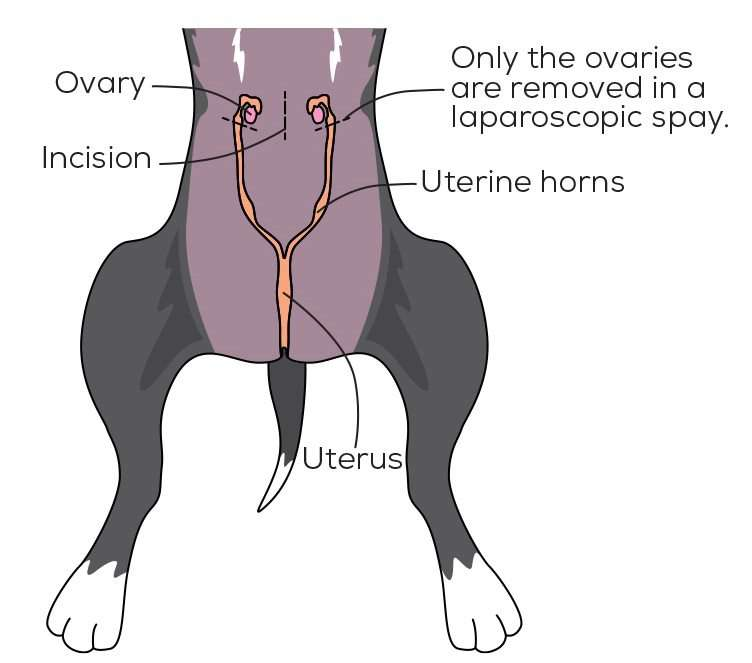

When to spay your cat and what happens after.
What is Spaying or Neutering?
Neutering is another name for the scientific name ovariohysterectomy and is usually used when referring to a male cat. Spaying is usually used when referring to female cats. This is when reproduction organs are removed to prevent certain types of illnesses or just to curb reproduction.
Neutering (Castration) in cats
Male cats can sometimes get temperamental whenever they are going through puberty. Their behavior will change for the worst and most likely become a less desirable pet. Getting your cat neutered can bring the happiness out in your furry friend.
Types of Neutering procedures
- Injectable sterilant: Involves injecting a chemical compound into the testicles to cause sterility.
- Traditional neuter (orchiectomy): Involves removing the testes.
- Vasectomy: Involves blocking off tubes.
Procedure to neuter your cat
- The procedure is simple. The cat will be put under full general anesthetic. Veterinarians will advise you to fast your cat 24-HRS before the procedure. A tube will be placed down his main airway to prevent the chance of vomit and other secretions getting in the way and just to help him breath easier.
- The likelihood of bacterial infection during operation is reduced by shaving the belly of the cat.
- An Anticeptic is used to scrub the belly of the pet to further sterilize the operation.
Types of Spaying procedures
- Traditional spay (ovariohysterectomy): This is where ovaries are removed to prevent reproduction.
- Tubal Ligation: This is where the fallopian tubes will be tied off to prevent any sperm from fertilizing any eggs.
- Left lateral flank spay: This operation involves creating a left incision instead of an incision on the underbelly.
- Progestins: One of the easiest procedures as this is just hormone that is introduced into the body by injection or oral medication.
Procedure to spay your cat
The procedure for spaying your cat starts off much like the procedure to neuter. The procedure only changes direction when it is time to remove certain parts of the reproduction system.
Infection after operation
If the incision location is well cleaned before and after the operation, infection is unlikely to take place. However, when a pet is taken home after an operation, infection might take place depending on the surroundings the pet is left in. This infection is not the most problematic as most can be treated by simple antibiotics.
How much does spaying or neutering your cat cost?
The cost of spaying or neutering of a cat varies depending on the sex of the cat and also the doctor who will be doing the operation. The cost can vary anywhere from $50 to upwards of $300 in some cases. The blue cross however offers low-cost neutering or spaying in many different locations. So, check to see if there are any blue cross locations near you or contact your local veterinarian for a quote.
Reaction to Anesthetic
Some cats might have a negative reaction to anesthetic.